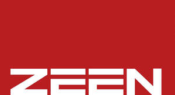

Trade Mark Journal No.2025/041 10 October 2025
UK00004265028 16 September 2025 (11,37)

- Class 11
- Apparatus and installations for lighting, heating, cooling, ventilating; sitz baths; hotplates; single lavatories being inset; side-entry baths for use by the physically handicapped; baths for use by the physically handicapped; lighting apparatus (for vehicles, indoor and outdoor lighting fixtures); heating apparatus, namely boilers, water heaters, radiators, stoves, cookers, solar collectors; steam generating apparatus; gas generators; oxygen generators; nitrogen generators; air conditioning and ventilation installations; refrigerators and freezers; cooking, drying and boiling appliances, namely ovens, electric pans, electric kettles, barbecues, grills; sanitary installations, namely taps, shower sets, flushing cistern fittings, shower cabins, bathtubs, toilets, sinks, wash basins, faucet washers, seals for taps; water softening apparatus; water purification apparatus; waste water treatment installations; industrial cooking, drying and cooling installations; pasteurising and sterilising machines.
- Class 37
- Construction services; rental of construction equipment and machinery; cleaning services; disinfection services; upholstery services; furniture repair and restoration; installation, maintenance and repair of heating, ventilation and plumbing systems; installation, maintenance and repair of industrial machinery, office machines, communication equipment, electrical and electronic devices; maintenance and repair of lifts; clock and watch repair; Building construction, repair of electrical and electronic devices; installation of electrical and electronic devices services.
MACACI İNŞAAT TAAHHÜT ELEKTRİK ELEKTRONİK OTOMOTİV SANAYİ VE TİCARET LİMİTED ŞİRKETİ
Representative: Ahmet Suat Gurler